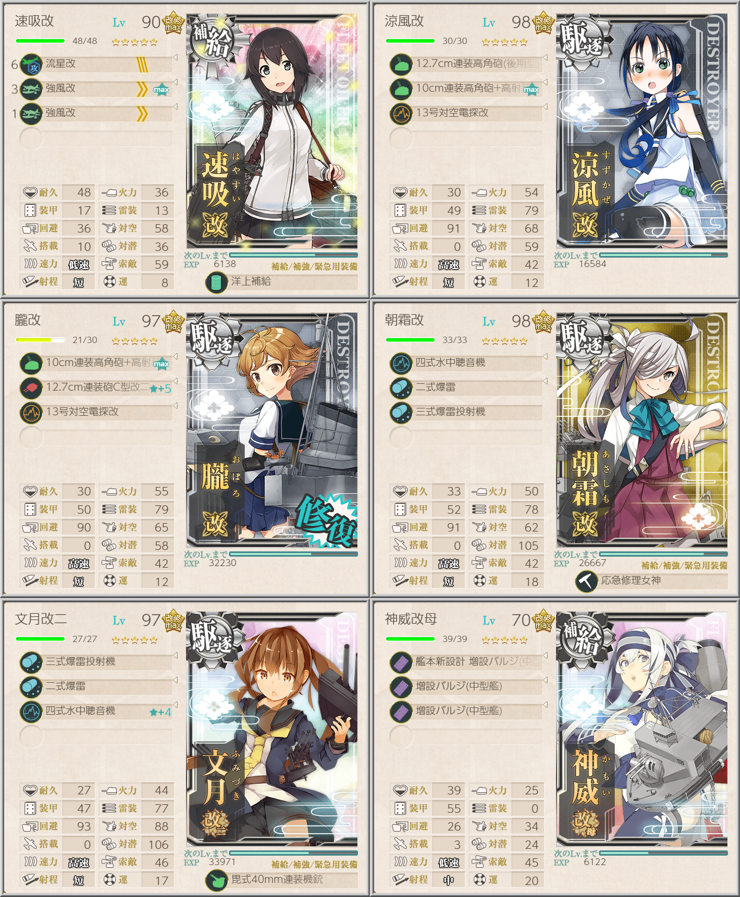

<!DOCTYPE HTML>
<html>
<head><meta name="generator" content="Hexo 3.9.0">
  <meta charset="utf-8">
  
  <title>【艦これ】【第二期】1-6 鎮守府近海航路【マンスリー】 | ぷらずま式改</title>
  <meta name="author" content="NPlasma">

  
  <meta name="description" content="NPlasmaの個人メモ">
  

  

  <meta name="viewport" content="width=device-width, initial-scale=1, maximum-scale=1">

  <meta property="og:title" content="【艦これ】【第二期】1-6 鎮守府近海航路【マンスリー】">
  <meta property="og:site_name" content="ぷらずま式改">

  
  

  
    <meta property="og:image" content="/img/ogp.png">
  

  <!-- ogp -->
  
    
      <meta name="description" content="1-6 攻略情報">
<meta name="keywords" content="ゲーム,艦これ,マンスリー,艦これ二期">
<meta property="og:type" content="article">
<meta property="og:title" content="【艦これ】【第二期】1-6 鎮守府近海航路【マンスリー】">
<meta property="og:url" content="http://elleonard.github.io/nplus_doc/2019/02/05/game/kancolle/season2/monthly/monthly-1-6/index.html">
<meta property="og:site_name" content="ぷらずま式改">
<meta property="og:description" content="1-6 攻略情報">
<meta property="og:locale" content="ja">
<meta property="og:image" content="http://elleonard.github.io/nplus_doc/2019/02/05/game/kancolle/season2/monthly/monthly-1-6/1-6-quorterly.png">
<meta property="og:updated_time" content="2019-09-13T04:56:40.601Z">
<meta name="twitter:card" content="summary">
<meta name="twitter:title" content="【艦これ】【第二期】1-6 鎮守府近海航路【マンスリー】">
<meta name="twitter:description" content="1-6 攻略情報">
<meta name="twitter:image" content="http://elleonard.github.io/nplus_doc/2019/02/05/game/kancolle/season2/monthly/monthly-1-6/1-6-quorterly.png">
<meta name="twitter:creator" content="@elleonard_f">
    
    <meta name="twitter:image" content="http://elleonard.github.io/nplus_doc/img/ogp.png">
  

  <link rel="alternate" href="/nplus_doc/atom.xml" title="ぷらずま式改" type="application/atom+xml">
  <link rel="stylesheet" href="/nplus_doc/css/style.css" media="screen" type="text/css">
  <!--[if lt IE 9]><script src="//html5shiv.googlecode.com/svn/trunk/html5.js"></script><![endif]-->
  


  <link rel="apple-touch-icon" sizes="180x180" href="/nplus_doc/favicon/apple-touch-icon.png">
  <link rel="icon" type="image/png" sizes="32x32" href="/nplus_doc//favicon/favicon-32x32.png">
  <link rel="icon" type="image/png" sizes="16x16" href="/nplus_doc//favicon/favicon-16x16.png">
  <link rel="manifest" href="/nplus_doc//favicon/site.webmanifest">
  <link rel="mask-icon" href="/nplus_doc//favicon/safari-pinned-tab.svg" color="#5bbad5">
  <meta name="msapplication-TileColor" content="#da532c">
  <meta name="theme-color" content="#ffffff">
</head>
</html>

<body>
  <header id="header" class="inner"><div class="alignleft">
  <h1><a href="/nplus_doc/">ぷらずま式改</a></h1>
  <h2><a href="/nplus_doc/">NPlasma個人メモ</a></h2>
</div>
<nav id="main-nav" class="alignright">
  <ul>
    
      <li><a href="/">Home</a></li>
    
      <li><a href="/nplus_doc/2016/05/29/about/">About</a></li>
    
      <li><a href="https://twitter.com/elleonard_f">Twitter</a></li>
    
      <li><a href="https://github.com/elleonard">GitHub</a></li>
    
      <li><a href="/nplus_doc/2018/02/09/game/fate/fgo/fgo-link/">FGO</a></li>
    
  </ul>
  <div class="clearfix"></div>
</nav>
<div class="clearfix"></div></header>
  <div id="content" class="inner">
    <div id="main-col" class="alignleft"><div id="wrapper"><article class="post">
  
  <div class="post-content">
    <header>
      
        <div class="icon"></div>
        <time datetime="2019-02-05T02:06:49.000Z"><a href="/nplus_doc/2019/02/05/game/kancolle/season2/monthly/monthly-1-6/">2019-02-05</a></time>
      
      
  
    <h1 class="title">【艦これ】【第二期】1-6 鎮守府近海航路【マンスリー】</h1>
  

    </header>
    <div class="entry">
      
        <div id="toc" class="toc-article">
          <p class="toc-title">目次</p>
          <ol class="toc"><li class="toc-item toc-level-1"><a class="toc-link" href="#任務"><span class="toc-text">任務</span></a><ol class="toc-child"><li class="toc-item toc-level-2"><a class="toc-link" href="#強行輸送艦隊、抜錨！（クォータリー）"><span class="toc-text">強行輸送艦隊、抜錨！（クォータリー）</span></a></li></ol></li></ol>
        </div>
        <p>1-6 攻略情報</p>
<a id="more"></a>

<h1 id="任務"><a href="#任務" class="headerlink" title="任務"></a>任務</h1><h2 id="強行輸送艦隊、抜錨！（クォータリー）"><a href="#強行輸送艦隊、抜錨！（クォータリー）" class="headerlink" title="強行輸送艦隊、抜錨！（クォータリー）"></a>強行輸送艦隊、抜錨！（クォータリー）</h2><p></p>
<p>補給艦と航空戦艦合わせて2隻を含む艦隊で2回ゴールへ到達することが条件<br>補給艦2の編成ならランダムで最短を通れる可能性があり、比較的やりやすい<br>（航空戦艦2で中央を突っ切ってもそこまで難しいわけではないので、お好みで）</p>
<p>初戦の潜水艦はさほど脅威ではないので、対潜攻撃艦はもっと減らしても良い<br>対空が重要なので、秋月型がいれば採用しておくと安定感が増す</p>
<p>ゲージを削るだけなら軽巡1駆逐5が最短ルート固定できて安定なので、任務以外でこの編成を使うことはないだろう</p>

      
    </div>
    
    <footer>
        <div class="alignright">
            <a href="https://twitter.com/share?ref_src=twsrc%5Etfw" class="twitter-share-button" data-text="【艦これ】【第二期】1-6 鎮守府近海航路【マンスリー】 | ぷらずま式改" data-url="http://elleonard.github.io/nplus_doc/2019/02/05/game/kancolle/season2/monthly/monthly-1-6/" data-via="elleonard_f" data-show-count="false">Tweet</a><script async src="https://platform.twitter.com/widgets.js" charset="utf-8"></script>
        </div>
        
  
  <div class="categories">
    <a href="/nplus_doc/categories/艦これ/">艦これ</a>
  </div>

        
  
  <div class="tags">
    <a href="/nplus_doc/tags/ゲーム/">ゲーム</a>, <a href="/nplus_doc/tags/艦これ/">艦これ</a>, <a href="/nplus_doc/tags/マンスリー/">マンスリー</a>, <a href="/nplus_doc/tags/艦これ二期/">艦これ二期</a>
  </div>

        
          <div class="article-prev">
              <a href="/nplus_doc/2019/02/05/game/kancolle/season2/3-1/">【艦これ】【第二期】3-1 モーレイ海哨戒 <span class="prev-arrow"/></a>
            </div>
        
        
          <div class="article-next">
            <a href="/nplus_doc/2019/02/03/game/kancolle/season2/monthly/monthly-3-5/">【艦これ】【第二期】3-5 北方AL海域【マンスリー】 <span class="next-arrow"/></a>
          </div>
        
        <!-- partial('post/share') -->
      <div class="clearfix"></div>
    </footer>
  </div>
</article>


</div></div>
    <aside id="sidebar" class="alignright">
  <div class="search">
  <form action="//google.com/search" method="get" accept-charset="utf-8">
    <input type="search" name="q" results="0" placeholder="検索">
    <input type="hidden" name="q" value="site:elleonard.github.io/nplus_doc">
  </form>
</div>

  
<div class="widget tag">
  <h3 class="title">カテゴリ</h3>
  <ul class="entry">
  
    <li><a href="/nplus_doc/categories/FGO/">FGO</a><small>47</small></li>
  
    <li><a href="/nplus_doc/categories/niconico/">niconico</a><small>3</small></li>
  
    <li><a href="/nplus_doc/categories/アニメ感想/">アニメ感想</a><small>9</small></li>
  
    <li><a href="/nplus_doc/categories/ゲーム/">ゲーム</a><small>46</small></li>
  
    <li><a href="/nplus_doc/categories/ゲーム/ゲームレビュー/">ゲームレビュー</a><small>35</small></li>
  
    <li><a href="/nplus_doc/categories/ゲーム制作/">ゲーム制作</a><small>7</small></li>
  
    <li><a href="/nplus_doc/categories/遊戯王ブロンティーズ/デッキレシピ/">デッキレシピ</a><small>4</small></li>
  
    <li><a href="/nplus_doc/categories/小説/">小説</a><small>3</small></li>
  
    <li><a href="/nplus_doc/categories/情報技術/">情報技術</a><small>11</small></li>
  
    <li><a href="/nplus_doc/categories/漫画/">漫画</a><small>2</small></li>
  
    <li><a href="/nplus_doc/categories/百合/">百合</a><small>6</small></li>
  
    <li><a href="/nplus_doc/categories/艦これ/">艦これ</a><small>76</small></li>
  
    <li><a href="/nplus_doc/categories/遊戯王ブロンティーズ/">遊戯王ブロンティーズ</a><small>4</small></li>
  
    <li><a href="/nplus_doc/categories/雑記/">雑記</a><small>4</small></li>
  
  </ul>
</div>


  
<div class="widget tag">
  <h3 class="title">最近の投稿</h3>
  <ul class="entry">
    
      <li>
        <a href="/nplus_doc/2020/02/04/game/crystar/">【ゲーム感想】CRYSTAR -クライスタ-</a>
      </li>
    
      <li>
        <a href="/nplus_doc/2020/01/21/game/azurlane-crosswave/">【ゲーム感想】アズールレーン クロスウェーブ</a>
      </li>
    
      <li>
        <a href="/nplus_doc/2020/01/19/game/bloodborne/">【ゲーム感想】Bloodborne</a>
      </li>
    
      <li>
        <a href="/nplus_doc/2020/01/12/game/monster-hunter/monster-hunter-world-iceborne/">【ゲーム感想】モンスターハンターワールド：アイスボーン</a>
      </li>
    
      <li>
        <a href="/nplus_doc/2019/12/31/misc/2019/">2019年の振り返り</a>
      </li>
    
  </ul>
</div>


  
<div class="widget tag">
  <h3 class="title">Link</h3>
  <ul class="entry">
    
      <li>
        <a href="https://www.nicovideo.jp/">niconico</a>
      </li>
    
      <li>
        <a href="http://lovingtheflags1986.blog96.fc2.com/">国旗と酒が待ち遠しいドリル日記</a>
      </li>
    
  </ul>
</div>


</aside>
    
    <div class="clearfix"></div>
  </div>
  <footer id="footer" class="inner"><div class="alignleft">
  <p>
  
  &copy; 2020 NPlasma
  
  All rights reserved.</p>
  <p>Powered by <a href="http://hexo.io/" target="_blank">Hexo</a></p>
</div>
<div class="clearfix"></div>
</footer>
  <script src="/nplus_doc/js/jquery.imagesloaded.min.js"></script>
<script src="/nplus_doc/js/gallery.js"></script>


<link rel="stylesheet" href="/nplus_doc/fancybox/jquery.fancybox.css" media="screen" type="text/css">
<script src="/nplus_doc/fancybox/jquery.fancybox.pack.js"></script>
<script type="text/javascript">
(function($){
  $('.fancybox').fancybox();
})(jQuery);
</script>


<div id='bg'></div>
</body>
</html>
